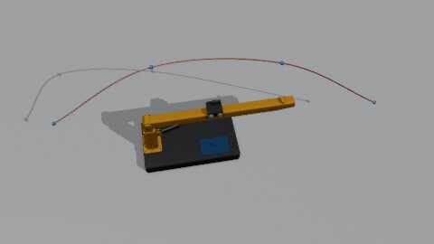

A camera operator: ready-made camera moves (study 0313)
The key idea: every move is the same three things – points the camera flies through, where it looks, and the lens. A ready-made move only places those points; dragging one of them in the view turns it into a free path, as today's Fly a path. One editor serves every move, and Build keeps baking plain keys (scripts off, render queue, saved projects work as today).
Below: the moves as clips (test crane, test mill; Workbench, the look of the 3D view), two moves with their options side by side, a path edited, a drawn mock-up of the step, the speed, and 9 build tasks to tick. You can also untick moves you do not want. ★ = recommended. The example (CinemaOperator) could not be opened from the web machine; its features come from the lead's notes, ideas only, no outside code.
1 · What the app has today
| Where | What it does | What a machine film still misses |
|---|---|---|
| 6 Animation, Camera step: Cut to / Move to a saved camera | Jumps or flies (straight line, eased) to a camera saved in 5 Scene & Render | The user must first place and save each camera by hand |
| Camera step: Orbit | Turns round the model's middle by an angle, from wherever the camera is | No height, distance or "round a part"; only the angle |
| Camera step: Ride along (0087) | Rides on a moving part (Keep level) | No lag: a swinging hook shakes the picture; offset only from a saved camera |
| Camera step: Fly a path (0087) | Smooth curve through points from saved cameras or "Add this view"; looks ahead / at the model / at a part | Points can only be added from the view, not dragged in it; no ready-made shapes |
| Camera step: Watch part | Stays put and turns to keep a part in the middle | – |
| 5 Scene & Render: Turntable, views (ISO, Front …), blur + sharp spot | One click: a 360° orbit animation; a sharp spot on a picked part | The sharp spot cannot move during a step (no focus pull) |
| Product video (0101) | Picks close-up spots and makes cameras for them | The moves between them are Move to / Orbit only |
Every change to a camera step is seen only after Build & play (it builds the whole animation). Study 0305 (task D) puts the steps as bars on the time line; the moves below fit in there as bars on the camera row.
2 · The short list of moves (ranked, with their options)
Each clip: 4 s, made by tasks/0313_proto/clips.py with the moves of moves.py, placed by the move itself
(nothing set by hand), Workbench 480 × 270 at 20 frames/s. Tick the moves you want in the first build (the Copy line at the bottom carries them).
Orbit round the whole model or a picked part
- How far round: 90° / 180° / 360° (any angle)
- Height: Low · Eye · High
- Way: left / right
- Distance: Tight · Normal · Roomy (always fitted: the model never leaves the picture)
The machine film's bread and butter; today's Turntable is Orbit 360. Steady distance: the camera keeps one distance all the way round (fitted where the model is widest), so a long model is small when seen end-on – a "keep it filling the picture" switch is possible (the distance then breathes).
Push in / Pull out (reveal) from the whole machine to a part, or back
- To: a part you click (the tool, the trolley, a type plate)
- How close: slider, 0 … 100 % of the way to a close-up
- Direction: in (push) / out (reveal)
- Speed: even, or slow at the end
Says "look here" – the second most used move. The look slides from the model's middle to the part's, so the part arrives in the middle of the picture.
Crane up / down rises from near the floor to above the machine, still looking at it
- Up or down
- How high: slider (half … 1.5 × the machine's height above its top)
- With a push in: none … a little
Shows how big a machine is and how it stands on its floor; a classic opening or end shot.
Hero arc low and close with a wide lens, a slow arc: the machine towers over you
- How low: slider
- How far round: 30° … 120°
- Lens: Wide (24 mm) · Normal (50 mm)
The "sales" shot – what product films open with. Options side by side in section 3. Seen in the clips: at the arc's end the boom points at the camera and leaves the picture; the build should fit each point of the arc, not the whole arc once.
Slide past a straight dolly track along the side
- Length: share of the machine's length
- Height: Low · Eye · High
- Look: at the middle (parts in front slide past the ones behind) · straight ahead
Good for long machines (a production line, a cable-lay deck, a gantry). With Walk shake it looks like a person walking past.
Top-down to side from a plan view straight above, swinging down to a side view
- Ends at: Front · Side · ISO
- Distance: Tight · Normal · Roomy
- Way: down (plan → side) / up (side → plan)
Explains a layout: first where everything is, then what it looks like.
Follow a moving part a chase camera: today's Ride along, kept level, with a soft lag
- Part: click it
- From: ISO · Side · Above
- Distance: slider
- Smooth: stiff · soft (lag 0 … 1 s: a swinging hook does not shake the picture)
The trolley, the hook, a carriage, the tool. The path is the part's own: nothing to edit.
Focus pull the sharp spot moves from one part to another
- From / to: click two parts
- When: slider (share of the step)
- Blur: Little · Strong (today's levels)
- Lens: Long (85 mm) by default
Draws the eye from the tool to the workpiece, from a type plate to the machine. Uses the app's sharp spot; the camera barely moves.
Fly-over comes in on one side, over the top, out the other side
- Height over the top
- Along / across the machine
- Look: at the middle · ahead (a drone)
Good for big layouts (a deck, a park, a hall); less for one machine. Edited in section 4.
Fly-through a drawn path today's Fly a path, with points clicked on the model
- Points: click on the model or the floor (the point goes a set height above what you click)
- Look: ahead · at the model · at a part
- Speed even, ramp up and down
Through a hall, along a cable route, into an enclosure. Exists today except drawing by clicking; task C adds dragging.
Shake, on any move a layer, not a move of its own
- Kind: Handheld · Walk · Vehicle (a boat or truck)
- Strength: slider
- Seed: another take of the same shake
A little Handheld makes a computer camera look filmed; Vehicle for a camera on the vessel. Worked out as a sum of a few slow waves with a seed: the same at every Build, baked to plain keys. Clips above: crane push-in (Handheld), mill slide (Walk).
Left out on purpose: roll (a turning horizon looks wrong for machines; it can be an option of Fly-over later), dolly zoom ("vertigo"), two camera tracks A/B with cuts (Cut to a saved camera does it today).
3 · Options side by side
Orbit: the three heights (120°, Normal)
Hero arc: Wide 24 mm or Normal 50 mm (both fitted by the move)
Push in: How close 50 % or 95 % (to the stock on the table)
4 · A path edited
The fly-over's path as it is placed (red: the curve, blue balls: its points), then two points pulled out to the side and one point added and lowered (green). The move keeps its look and speed; only the way changes. Placing and the edit each took about 1 ms.

Found on the way: a smooth curve through an orbit's points strays from the circle at its two ends (2 % of the radius with 12 points per turn, 0.2 % in between) because the curve guesses its end direction. An untouched orbit should stay an exact arc, and the path's ends should take the move's own direction (build task A).
5 · How it works, fast
Orbit
Push in
Crane
Hero
Slide
Top-down
Follow
Focus
- Pick a move (one click on a picture tile; on hover it plays as a small loop). It is placed round the model at once – or round the part you click when Around is "A part" – and plays in the view through the camera (Preview on by default).
- Options as sliders and three-way buttons – each change re-places the move and keys only this step's camera (about 5 ms), the view keeps playing.
- Edit path shows the points in the view: drag one, click + between two to add, right-click to remove. The move becomes "Orbit (edited)" with a Back to Orbit.
- More (folded): Look (at the model · a part · ahead · held), Lens (Wide 24 · Normal 50 · Long 85 · Tele 135, a zoom between points), Shake (kind, strength, seed), Speed (even / slow start and end / ramp), Blend in from the last step.
- Guides = Blender's own camera composition guides (thirds, centre, golden, safe areas): only in the view, never in a render.
One move = one Camera step. Build bakes keys as today (plain keys: scripts off, queue, saved projects). Chaining: the next move starts where this one ended (glide in, as today's Blend in), or Cut, or Join into one path (the two moves' points become one Fly a path). On 0305's time line (task D) each move is a bar on the camera row; drag its ends to retime.
The mock-up is drawn for this page (HTML), not a screenshot of the app.
6 · Who uses what, and where it lives
| Who | Does | Needs |
|---|---|---|
| Sales person | Picks "Orbit", or "Hero arc" then "Push in" to the type plate, renders | The tiles, Preview, the defaults right first time. No path, no lens. |
| Engineer | Changes How far, Height, Around a part, drags a point past a column, adds Follow on the carriage | Sliders, Edit path, Around a part, Follow |
| Animator (Full access) | Takes the moves as a start and polishes them in Blender's graph editor | "Hand over as keys": keys on the move's points (Bezier, few keys) instead of a key per frame, the step then off |
Where: the move is a Camera step in 6 Animation (the step's kind "Camera move" with the tiles; the old modes Cut to / Move to / Ride / Fly a path / Watch stay under the same step). A one-move video does not need an animation made by hand: the Video output window (Make, task 0308) gets a row "Camera: [tile]" that makes a one-step animation with that move and renders it. 5 Scene & Render > Cameras keeps the still views; its Turntable becomes "Orbit 360" behind the same code. The product video (0101) uses Hero arc and Push in between its close-ups (task G).
7 · Speed (point D)
Web machine (4 cores, no graphics card), Blender 5.2.3 as a Python module, draft import. tasks/0313_proto/speed.py;
numbers in speed.json. A move = placing it round the model and working out 5 s at 25 frames/s (125 frames). No viewport
frame rate here (no graphics card): "frame step" is what Blender spends on a frame besides drawing, with only the camera keyed.
| Model | Parts | Triangles | Corner points of the model | Place a move (6 moves) | Key 125 frames | Frame step | Today: Build with one Fly a path step |
|---|---|---|---|---|---|---|---|
| Test crane | 20 | 7,046 | 0.2 ms | 1.3–2.9 ms | 5.3 ms | 0.03 ms | 0.01 s |
| Test mill | 44 | 7,753 | 0.4 ms | 1.2–2.5 ms | 4.9 ms | 0.04 ms | 0.01 s |
| PC check Heavy (invented, 39 × 55 m) | 2,992 | 3,782,496 | 40 ms | 1.3–5.5 ms | 5.5 ms | 4.4 ms | 0.52 s |
Yes, instant – with one catch: reading the model's corner points (one box per part, in Python) costs 40 ms on 2,992 parts. Read them once when the step is opened (and after a Build), not at every slider move; then a slider move costs about 5–10 ms (place + key) on every model tried. A part picked as the subject costs 0.01 ms. Playing the preview adds 4.4 ms a frame on the big model – far below one frame at 25 frames/s (40 ms); the drawing itself depends on the graphics card (the owner's RTX 3090: not measured here). Today's Build is not slow either (0.5 s on the big model), but it builds the whole animation – with milling, cables or the demo it takes seconds to minutes, so the preview should key only the camera (task B).
Clips: Workbench 480 × 270, about 0.25–0.3 s a frame here (the focus pull: Cycles, 24 samples, 4.9 s a frame).
8 · Build tasks
All in the Scene & Render lane (animation.py's camera part, camera_path.py, cameras.py, a new
core/camera_moves.py) plus the Camera step's box in 6 Animation (ui_motion.py) and props.py – shared files,
so after 0299 (weather round 2, same lane) and one at a time. Sizes: S ≈ a day of a worker, L ≈ several sessions.
Camera move step with the six first moves work L · Opus · High · after 0299
A new Camera step kind "Camera move": tiles for Orbit, Push in / Pull out, Crane up / down, Hero arc, Slide past, Top-down to side (the
moves you ticked above), their options (section 2), Around the model / a part. core/camera_moves.py places them (from
moves.py, fitted with the rule of cameras.fit); Build bakes them through camera_path.plan like Fly a path.
An untouched orbit stays an exact arc; the path's ends take the move's own direction. Function list, guide, PC-check line, tour stop, lesson
step (crane), as the rules ask.
Measured: placing 1–6 ms on every model tried. Gain: a sales person makes a moving shot in two clicks instead of placing cameras.
Instant preview and framing guides work M · Opus · Medium · with or right after A
Picking a move or moving a slider keys only that step's camera (no whole Build) and plays it in the view through the camera, looping the step; the rest of the animation as last built. Guides switch Blender's camera composition guides (thirds, centre, safe areas). Tiles play a small loop on hover (a picture per move made once, shipped with the app).
Measured: keying 125 frames ~5 ms; a frame step with only the camera keyed 0.03–4.4 ms (section 7). Gain: "fast", the owner's word.
Drag the path in the view work L · Opus · High · after A
Edit path: the path and its points drawn in the view (a draw handler, nothing in the project, as the hover of 0088); drag a point (in the view's plane, Shift = up/down), + between two to add, right-click to remove, Esc back. The move becomes "(edited)" and keeps its look and speed; Back to the move. Also for today's Fly a path; points clicked on the model or the floor (move 10).
Measured: an edit re-placed in ~1 ms. Gain: the owner's "paths to be edited".
Follow, Focus pull and Shake work M · Opus · Medium · after A
Follow = Ride along made from options (from ISO / Side / Above, distance, smooth = a lag, kept level); Focus pull = the sharp spot keyed from one picked part to another during the step (the app's blur levels); Shake = a layer on any camera step (Handheld / Walk / Vehicle, strength, seed), baked to keys.
Gain: the three moves that make a film look filmed. Shake on the vessel demo with Vehicle.
Lens presets and zoom work S · Sonnet · Medium · with D
Lens per move: Wide 24 · Normal 50 · Long 85 · Tele 135 (mm, the full-frame words people know), and a zoom between a move's points (even in the field of view, as Move to does). The move re-fits its distance when the lens changes.
Chain moves on the time line work M · Opus · Medium · after 0305 task D (steps as bars)
Next move: glide in / cut / join into one path; "Fit the moves to the animation's length", "Space evenly"; camera bars on the time line dragged to retime.
One-move video from Make, and the product video uses the moves work S–M · Sonnet · Medium · after A and 0308
The Video output window gets "Camera: [tile]" (a one-step animation with that move, then Render); Turntable = Orbit 360 behind the same code; the product video moves between its close-ups with Hero arc and Push in.
Hand over as keys (animators) work S · Sonnet · Medium · after A
Full access: "Hand over as keys" writes a key per path point (Bezier) instead of one per frame, switches the step off and names the action, so Blender's graph editor can take over.
Fly-over and drawn fly-through work M · Opus · Medium · after C
Moves 9 and 10: Fly-over (height, along / across, look) and a path drawn by clicking on the model or the floor.
Clips and pictures: tasks/0313_page/clips (MP4 + poster each); timings: timings.json and speed.json next to this page; the scripts that made them: tasks/0313_proto/ (moves.py = the moves, no Blender; clips.py; speed.py) on the branch task/0313-study-camera-operator.